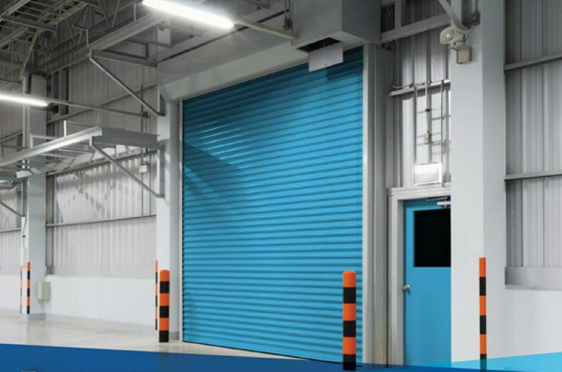

Trên thị trường hiện nay, cửa cuốn chống cháy và cửa cuốn thường đều được sử dụng rộng rãi. Tuy nhiên, chúng có những khác biệt về tính năng và ứng dụng. Bài viết dưới đây sẽ so sánh cửa cuốn chống cháy và cửa cuốn thông thường để giúp bạn hiểu rõ hơn về sự khác nhau giữa hai loại cửa này.
Cửa cuốn thường có mặt rất nhiều trong đời sống hằng ngày như: Cửa hàng bán lẻ, cửa hầm để xe, trung tâm thương mại hay nhà dân…
Loại cửa này thường được làm từ các vật liệu như thép, nhôm…. Chúng có khả năng chịu lực tốt và có độ bền cao. Mặc dù không được thiết kế đặc biệt để chống cháy nhưng cửa cuốn bình thường vẫn đáp ứng các tiêu chuẩn an toàn cần thiết. Chúng vẫn có khả năng chống lại các vụ va chạm hoặc tác động bên ngoài.
Cửa cuốn chống cháy là loại cửa được thiết kế đặc biệt để chịu được nhiệt độ cao và ngăn chặn sự lan rộng của ngọn lửa trong trường hợp xảy ra hỏa hoạn. Nó thường được sử dụng trong các tòa nhà, nhà xưởng, khu công nghiệp và các không gian có nguy cơ cháy nổ cao.
Loại cửa này thường được làm từ các vật liệu chống cháy như thép chống cháy, thép không gỉ hoặc hợp kim đặc biệt. Chúng có khả năng chống cháy lên đến một thời gian nhất định để tạo thời gian để sơ tán và chữa cháy.
Cửa cuốn chống cháy và cửa cuốn thường có những đặc điểm và ứng dụng riêng biệt. Cửa cuốn chống cháy được thiết kế đặc biệt để chống cháy và có khả năng ngăn chặn sự lan truyền của lửa và khói. Chúng thường được sử dụng trong các khu vực có yêu cầu an toàn chống cháy cao như tòa nhà, khu chung cư và khu công nghiệp. Trong khi đó, cửa cuốn thường phù hợp cho các công trình dân dụng, nhà ở và cửa hàng.